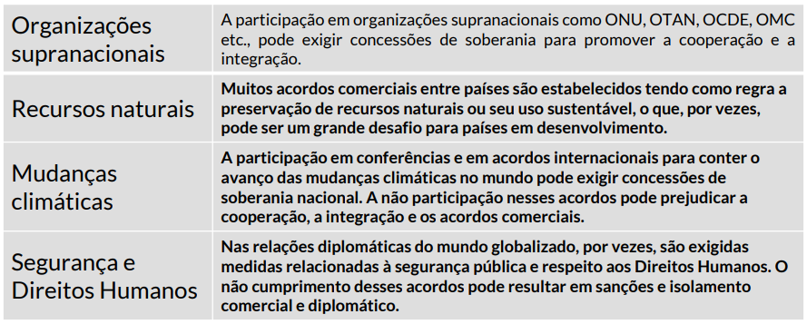

E.E. República da Costa Rica
Itinerário Formativo
Dia: 16/02/2024
Contrato de convivência nas aulas de geografia/itinerário formativo/Prof. Renato
Só entrará com atraso com ciência da gestão da escola, na entrada, no intervalo ou a qualquer momento em que o aluno não estava presente na referida aula. Saídas com autorização e por vez independente do motivo, caso haja saídas sem autorização do professor será encaminhado a direção.
Serão utilizados três Instrumentos de avaliação na composição das notas bimestrais.
Uso de quaisquer equipamentos eletrônicos sem fins pedagógicos, os alunos serão orientados por uma ou duas vezes, persistindo na atitude será encaminhado a gestão para as devidas providencias
Respeito é fundamental na convivência, por tanto o aluno que não colaborar na construção de ambiente respeitoso, harmonioso onde se prevalece o respeito entre todos será orientado e não havendo resultado, também será encaminhado a gestão.
Responda:
O que é geopolítica?
21/02/2024
 link.img
link.img
Analise a imagem e após relate sua compreensão por geopolítica tendo base as seguintes palavras chaves
➣ Localização, território, posse de recursos naturais, contingente populacional e geológico como topografia natural e clima e os estudos internacionais.
28/02/2024
A geopolítica considera a relação entre os processos políticos e as características geográficas(como localização, território, posse de recursos naturais , contingente populacional e geológico) - como topografia natural e clima, e os estudos intercontinentais avaliativo e interpretativo em relação com a ecologia.
Geopolítica é uma categoria da Geografia que abrange os fenômenos históricos e políticos da atualidade. Ela tem um objetivo de interpretar a realidade global e envolve o estudo de guerras, conflitos, disputas ideológicas e territoriais, questões políticas, acordos internacionais, etc .
A geopolítica facilita assim a interpretação dos dilemas atuais como conflitos territoriais, étnicos e políticos, guerras comerciais, disputas por hegemonia, tensões diplomáticas entre 2 ou mais estados nacionais, a atuação dos das organizações internacionais em meio a essas questões de diversos outros acontecimentos...
15/03/2024
1. O que significa soberania nacional?
2. Qual seria a relação existente entre soberania nacional e interdependência global?
3. Como os países podem equilibrar a preservação de sua autonomia com a necessidade de cooperação internacional para enfrentar desafios comuns?
Aula 2 - Soberania Nacional x Interdependência Global?
22/03/2024
Leia as alternativas abaixo e aponte quais estão corretas e que melhor descrevem a interconexão entre recursos naturais, relações comerciais e dependência econômica na sociedade contemporânea.
Respostas:
B. As relações comerciais e diplomáticas entre países podem ser extremamente afetadas pelas disputas por recursos naturais.
C. A competição por recursos naturais pode levar a disputas geopolíticas e criar dependência econômica entre nações
1. Pensando na competição global por recursos naturais que impacta diretamente no equilíbrio entre as nações, quais seriam os principais efeitos desta situação?
Podem ser citados como principais efeitos: guerras e conflitos com o objetivo de ter controle sobre alguns recursos, acordos comerciais que por vezes geram a dependência econômica do país produtor com o país comprador, entre outros.
2. Analise os riscos associados à dependência econômica excessiva de certos recursos naturais. Como essa dependência pode tornar as economias vulneráveis a flutuações nos preços globais?
A dependência na compra ou venda de recursos naturais fragiliza economias, deixando países vulneráveis à disponibilidade e preço desses recursos, comprometendo a produção e abastecimento energético.
Aula 3 - Produção e uso de recursos naturais na sociedade contemporânea
Divididos em grupos, a partir das manchetes que trazem conflitos pelo petróleo, listem os principais motivadores e consequências desse tipo de conflito.
Elaborem propostas e alternativas para a resolução ou mitigação de conflitos por petróleo considerando os diversos fatores envolvidos (político, econômico, estratégico). Por fim, apresentem suas produções para a sala.
Aula 4 - Geopolítica do Petróleo?